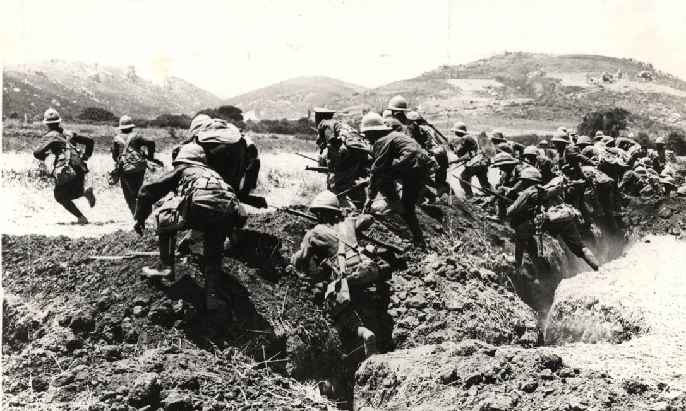
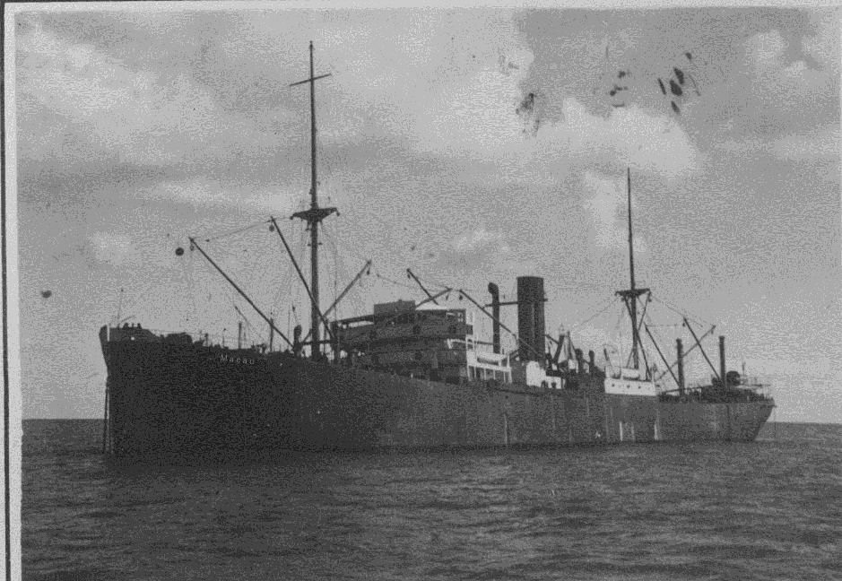

A Paz Armada: o barril de pólvora sob a Belle Époque
Para compreender a magnitude e a brutalidade da Primeira Guerra Mundial (1914-1918),
é preciso olhar para as décadas que a antecederam, um período paradoxal conhecido
como a "Belle Époque" e a "Paz Armada". Entre o fim da Guerra Franco-Prussiana em
1871 e o fatídico verão de 1914, a Europa não vivenciou grandes conflitos em seu
próprio continente. Havia uma crença otimista de que a ciência, a Segunda Revolução
Industrial, a eletricidade, o telefone e as ferrovias haviam elevado a civilização
europeia a um patamar onde a guerra total seria obsoleta. No entanto, essa aparente
tranquilidade era sustentada por uma base extremamente frágil e perigosa: a feroz
competição imperialista. O capitalismo industrial exigia mercados consumidores e
matérias-primas em uma escala sem precedentes, empurrando as potências europeias
para uma corrida predatória por colônias na África e na Ásia.
Nesse cenário de disputa global, o equilíbrio de poder europeu começou a rachar. A
Alemanha, unificada tardiamente, crescia a um ritmo industrial e militar assustador,
exigindo "seu lugar ao sol" e ameaçando a hegemonia naval e econômica do Império
Britânico. A França, por sua vez, alimentava um profundo sentimento de revanchismo,
desejando recuperar os ricos territórios da Alsácia-Lorena, perdidos para os alemães.
No leste, os velhos e decadentes impérios Austro-Húngaro e Russo disputavam a
influência sobre a região dos Bálcãs, um mosaico de nacionalidades oprimidas que
fervia com movimentos separatistas. Sabendo que um choque seria inevitável, essas
nações começaram a investir fortunas na modernização de seus exércitos e formaram um
complexo sistema de alianças secretas. A Tríplice Aliança (Alemanha, Império
Austro-Húngaro e Itália) se opunha à Tríplice Entente (Reino Unido, França e Rússia).
A Europa havia se tornado uma máquina de guerra interligada; bastava uma faísca para
que o continente inteiro explodisse.
Essa faísca foi acesa em 28 de junho de 1914, na cidade de Sarajevo, na Bósnia. O
arquiduque Francisco Ferdinando, herdeiro do trono Austro-Húngaro, foi assassinado a
tiros por Gavrilo Princip, um jovem nacionalista sérvio. O que poderia ter sido
resolvido como uma crise diplomática regional rapidamente se transformou em uma
catástrofe global devido ao sistema de alianças. A Áustria-Hungria declarou guerra à
Sérvia; a Rússia mobilizou suas tropas para defender os sérvios; a Alemanha, aliada
dos austríacos, declarou guerra à Rússia e à França, e, ao invadir a neutra Bélgica
para chegar a Paris, forçou a entrada do Império Britânico no conflito. Em poucas
semanas, a ilusão da civilização europeia desmoronou. Multidões celebraram nas ruas de
Berlim, Paris e Londres, acreditando que a guerra seria rápida e gloriosa, com os
soldados retornando "antes do Natal". Eles não faziam ideia do pesadelo industrial que
estava prestes a devorar uma geração inteira.
A Máquina de Moer Carne: o inferno das trincheiras e a guerra industrial

A tragédia fundamental do início da Primeira Guerra Mundial foi o choque entre mentes do
século XIX operando armas do século XX. Os generais europeus, formados nas tradições
das Guerras Napoleônicas, ainda acreditavam em cargas de cavalaria, infantaria em linha
e marchas gloriosas através de campos abertos. A realidade, porém, era brutalmente
diferente. A Segunda Revolução Industrial havia sido aplicada à arte de matar. O campo
de batalha agora era dominado pela metralhadora, capaz de disparar centenas de tiros
por minuto e dizimar regimentos inteiros em segundos, e pela artilharia pesada, que
despejava milhões de toneladas de aço e explosivos sobre as posições inimigas. Diante
desse poder de fogo avassalador, a guerra de movimento logo fracassou na Frente
Ocidental. Para sobreviver, os exércitos precisaram cavar buracos na terra. Nascia
assim o inferno da Guerra de Trincheiras.
Uma rede contínua e assustadora de valas estendeu-se desde a costa da Bélgica até a
fronteira da Suíça, cortando a Europa ao meio. As condições de vida dentro dessas
trincheiras eram desumanas. Soldados viviam imersos na lama até os joelhos, convivendo
diariamente com ratos gigantes, piolhos, frio congelante, fezes e o cheiro ininterrupto
de cadáveres em decomposição na "Terra de Ninguém" — a faixa de solo devastada entre as
linhas inimigas. Doenças como o "pé de trincheira", causado pela umidade constante,
levavam a amputações diárias. O desgaste psicológico era tão severo que surgiu o termo
"Shell Shock" (choque de granada), uma forma grave de transtorno de estresse pós-traumático
que deixava soldados paralisados, tremendo incontrolavelmente, incapazes de lidar com o
bombardeio contínuo e a tensão constante da morte iminente.
Para tentar quebrar o impasse dessa guerra estática, as potências recorreram a inovações
cada vez mais sombrias. Foi na Primeira Guerra que os aviões, inicialmente usados apenas
para observação, passaram a ser armados. Foram introduzidos os primeiros tanques de
guerra britânicos, máquinas pesadas e desajeitadas feitas para esmagar os temidos
arames farpados. Mas a arma mais aterrorizante nascida desse desespero foi o gás tóxico.
Substâncias como o gás mostarda e o cloro começaram a ser lançadas nas linhas inimigas,
queimando pulmões, cegando e causando mortes por asfixia lenta e dolorosa. Batalhas como
Verdun e Somme duraram meses e consumiram a vida de milhões de homens por ganhos
territoriais pífios, às vezes medidos em apenas algumas centenas de metros. A guerra não
era mais sobre conquistar territórios brilhantemente, mas sobre qual lado conseguiria
sangrar o outro até o esgotamento total, sugando todos os recursos humanos e econômicos
de suas nações.
1917: O Ano da Virada e o colapso interno dos impérios
O ano de 1917 marcou o ponto de ruptura da Primeira Guerra Mundial. Após três anos de
matança ininterrupta, as economias europeias estavam em frangalhos e as populações
civis encontravam-se no limite da fome e do desespero. O conceito de "guerra total"
significava que toda a sociedade estava mobilizada para o esforço bélico: mulheres
assumiram em massa os postos nas fábricas de munição, alimentos eram estritamente
racionados e a propaganda estatal operava a todo vapor. No entanto, o moral estava
desmoronando. No exército francês, soldados começaram a se amotinar, recusando-se a
participar de ataques suicidas. Mas foi na Frente Oriental que o primeiro grande
império desabou sob o peso das próprias contradições. O Império Russo, com uma
estrutura agrária atrasada e governado pelo autocrático Czar Nicolau II, não
suportou a pressão industrial do conflito.
Com milhões de soldados mortos, sem armas e com a fome tomando as grandes cidades, o
povo russo se rebelou. A Revolução de Fevereiro derrubou o czarismo, e, logo em
seguida, a Revolução de Outubro colocou os bolcheviques de Lênin no poder. Cumprindo
a promessa de "Paz, Pão e Terra", o novo governo soviético assinou o Tratado de
Brest-Litovsk com a Alemanha em março de 1918, retirando a Rússia oficialmente do
conflito e cedendo vastos territórios. A saída russa foi um alívio imenso para a
Alemanha, que pôde finalmente transferir todas as suas divisões do leste para a
Frente Ocidental, preparando uma ofensiva final que esperava ser decisiva antes que
o equilíbrio de poder mudasse novamente.
Entretanto, o que a Alemanha ganhou com a saída da Rússia, perdeu de forma ainda mais
catastrófica com a entrada dos Estados Unidos na guerra, também em 1917. Até então,
os EUA mantinham uma postura de neutralidade oficial, embora lucrassem bilhões de
dólares exportando armas, alimentos e concedendo empréstimos gigantescos para a
Inglaterra e a França. O alto-comando alemão, desesperado para cortar esses
suprimentos, adotou a guerra submarina irrestrita, afundando qualquer navio
(mesmo de nações neutras) que se aproximasse da Europa. O afundamento de navios
americanos, somado à interceptação do Telegrama Zimmermann (uma proposta alemã de
aliança militar com o México contra os EUA), deu ao presidente Woodrow Wilson o
motivo para convencer o Congresso a declarar guerra à Alemanha. A chegada das tropas
americanas (frescas, bem alimentadas e não afetadas pelo trauma de três anos de
trincheiras) e do imenso poder industrial dos EUA injetou ânimo na Entente e tornou
a vitória alemã uma impossibilidade material.
O Brasil no centro do conflito: torpedos, submarinos e a DNOG

Muitas vezes tratada como uma nota de rodapé nos livros tradicionais, a participação
do Brasil na Primeira Guerra Mundial foi um divisor de águas na nossa história
política e econômica. Inicialmente, o Brasil adotou uma postura de estrita
neutralidade, declarada pelo presidente Venceslau Brás. A guerra na Europa era
vista como um problema distante, mas seus efeitos econômicos atingiram o país com
força. O bloqueio naval britânico e a paralisação da navegação comercial causaram
um baque profundo nas nossas exportações de café, ao mesmo tempo em que forçaram
um incipiente processo de industrialização interna por substituição de importações,
já que o Brasil não conseguia mais importar manufaturados da Europa em guerra.
A situação mudou drasticamente em 1917, quando a Alemanha declarou a já mencionada
guerra submarina irrestrita. O Oceano Atlântico virou zona de morte. Em abril
daquele ano, o navio mercante brasileiro "Paraná" foi torpedeado e afundado por um
submarino alemão (U-boat) no Canal da Mancha, matando tripulantes brasileiros. O
incidente gerou uma onda de indignação nacional, manifestações populares exigindo a
guerra e ataques a propriedades de imigrantes alemães no sul do Brasil. Após o
afundamento de mais um navio, o "Macau", em outubro de 1917, o governo brasileiro
cedeu à pressão interna e oficializou o estado de guerra contra o Império Alemão.
O Brasil tornou-se, assim, o único país da América do Sul a participar ativamente do
primeiro grande conflito global.
A contribuição brasileira não se resumiu a discursos diplomáticos. O Brasil enviou
ao front uma expressiva Missão Médica liderada pelo Dr. Nabuco Gouveia, composta
por dezenas de médicos civis e militares que montaram um hospital de sangue em Paris,
atendendo milhares de feridos com excelência técnica. No campo militar, o país
mobilizou a Divisão Naval em Operações de Guerra (DNOG), uma frota comandada pelo
almirante Pedro Max Fernando Frontin, enviada para patrulhar o Atlântico Norte e
combater a ameaça dos submarinos. Tragicamente, o maior inimigo da esquadra brasileira
não foi o torpedo alemão, mas a terrível Gripe Espanhola. Quando a frota atracou
em Dacar (Senegal), o vírus devastou a tripulação, matando dezenas de marinheiros
e vitimando milhares quando a doença inevitavelmente chegou aos portos brasileiros
no pós-guerra, alterando a saúde pública do país para sempre.
O Tratado de Versalhes: uma paz punitiva e o prelúdio da próxima catástrofe

No outono de 1918, a Alemanha estava militarmente exaurida, bloqueada nos mares e
enfrentando motins comunistas internos. Sem condições de continuar lutando, o país
solicitou um armistício, que entrou em vigor no dia 11 de novembro. O saldo foi
pavoroso: cerca de 20 milhões de mortos e 21 milhões de feridos (entre civis e
militares). O mapa político da Europa foi estilhaçado. Quatro impérios centenários
deixaram de existir: o Império Alemão, o Austro-Húngaro, o Russo e o Otomano. No
lugar deles, surgiram novas repúblicas instáveis e fronteiras artificiais no Oriente
Médio, traçadas arbitrariamente por ingleses e franceses, cujos conflitos perduram
até os dias atuais.
Em 1919, os vencedores reuniram-se em Paris para ditar os termos da paz, culminando
no famoso Tratado de Versalhes. Ao contrário das intenções conciliatórias do
presidente americano Woodrow Wilson (que propôs os "14 Pontos" para uma paz sem
vencedores), França e Inglaterra impuseram um acordo de punição extrema e vingança
direta contra a Alemanha. Os alemães nem sequer foram convidados a negociar, sendo
obrigados a assinar o que chamaram de "Diktat" (uma imposição ditatorial). O tratado
culpou a Alemanha com exclusividade pelo conflito, obrigou o país a pagar indenizações
astronômicas que destruíram sua economia, limitou seu exército a ridículos 100 mil
homens e confiscou todos os seus territórios ultramarinos, além da devolução da
Alsácia-Lorena à França.
Embora o Tratado de Versalhes tenha promovido a criação da Liga das Nações (um
primeiro esforço internacional para prevenir futuros conflitos, do qual o Brasil foi
membro fundador prestigiado), o acordo foi, em sua essência, um fracasso diplomático
monumental. A paz baseada na humilhação não trouxe estabilidade. A República de
Weimar, que se formou na Alemanha após a guerra, nasceu afogada em dívidas,
hiperinflação e ressentimento popular profundo. O orgulho nacional ferido criou o
terreno fértil perfeito para o surgimento de discursos radicais, militaristas e
antissemitas. Ao invés de garantir a paz duradoura, as cláusulas de Versalhes
fizeram da Primeira Guerra Mundial apenas o primeiro ato de uma tragédia global,
pavimentando o caminho sombrio que levaria a humanidade diretamente aos horrores do
Nazifascismo vinte anos depois.